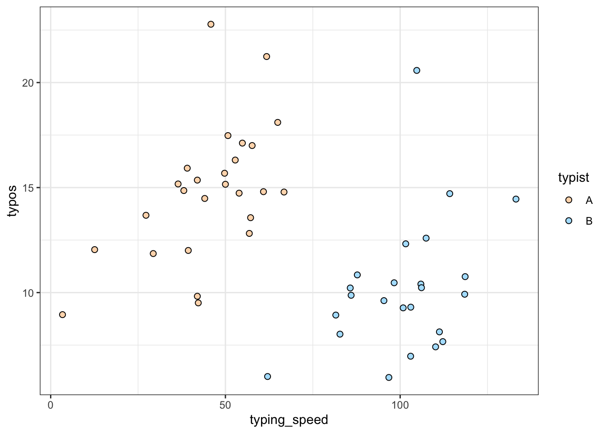

# These values chosen to represent a scenario where typing faster increases
# typos, but faster typists on average commit fewer typos. If you ignore the
# second predictor (who is typing) then an apparent negative relationship
# emerges, suggesting typing faster reduces typos.
beta_0 <- 10 # Intercept
beta_1 <- 0.1 # Additional typos per increase in speed
beta_2 <- -10 # Difference between typist B and the reference level (typist A)
sigma <- 3 # Standard deviation of the residualsBefore you code
Before you start coding in this document, your group should have completed the sections Design the scenario and Choose your parameters from the handout.
Simulate the data
You’ve chosen your parameters (\(\beta\)s and \(\sigma\)). Define them here:
Generate random values
- Simulate your predictor variables. Remember, for Simpson’s paradox to emerge, there has to be a dependency between the two predictor variables.
# Sample size
N <- 50
# Typist identities
typist <- sample(c("A", "B"), N, replace = TRUE)
# Dummy variable for typist B
typistB <- ifelse(typist == "B", 1, 0)
# Typing speed is _greater_ for typist B, who is also less error-prone
typing_speed <- rnorm(N, mean = ifelse(typist == "B", 100, 45), sd = 15)- Calculate the expected value of the response. This is similar to regression with a single predictor, but includes a second term.
\[ y = \beta_0 + \beta_1 x_1 + \beta_2 x_2 \]
expected_typos <- beta_0 + beta_1 * typing_speed + beta_2 * typistB- Simulate the response variable. This is the same as regression with a single predictor. The expected value incorporates the influence of the multiple predictors. Once you have that number, you just need normally-distributed residuals.
typos <- rnorm(
n = N,
mean = expected_typos,
sd = sigma
)Visualize your simulated data. Verify it’s comparable to your original drawing. If necessary, tweak your parameter values until it represents your scenario reasonably well.
simulated_typing <- tibble(typing_speed, typos, typist)
ggplot(simulated_typing, aes(x = typing_speed, y = typos, fill = typist)) +
geom_point(size = 2, shape = 21) +
scale_fill_manual(values = c("peachpuff", "lightskyblue1"))
Fit and interpret regression models
Fit the models
Use lm() to fit two regression models to your simulated data.
In the first model, only include the first predictor.
speed_only <- lm(typos ~ typing_speed, data = simulated_typing)In the second model, include both predictors.
speed_typist <- lm(typos ~ typing_speed + typist, data = simulated_typing)Interpret the models
Use summary() on both models. If you’ve simulated the paradox properly, the sign of the coefficient for the first predictor should flip between the models.
summary(speed_only) # beta_1 ~= -0.04
Call:
lm(formula = typos ~ typing_speed, data = simulated_typing)
Residuals:
Min 1Q Median 3Q Max
-7.0273 -2.4690 -0.5602 1.8565 9.3844
Coefficients:
Estimate Std. Error t value Pr(>|t|)
(Intercept) 15.70437 1.31052 11.983 4.91e-16 ***
typing_speed -0.04306 0.01665 -2.587 0.0128 *
---
Signif. codes: 0 '***' 0.001 '**' 0.01 '*' 0.05 '.' 0.1 ' ' 1
Residual standard error: 3.71 on 48 degrees of freedom
Multiple R-squared: 0.1223, Adjusted R-squared: 0.104
F-statistic: 6.69 on 1 and 48 DF, p-value: 0.01278summary(speed_typist) # beta_1 ~= 0.10
Call:
lm(formula = typos ~ typing_speed + typist, data = simulated_typing)
Residuals:
Min 1Q Median 3Q Max
-4.9963 -1.6735 -0.0618 1.2214 10.0247
Coefficients:
Estimate Std. Error t value Pr(>|t|)
(Intercept) 10.33208 1.35594 7.620 9.46e-10 ***
typing_speed 0.09883 0.02724 3.628 0.000701 ***
typistB -10.13145 1.71841 -5.896 3.87e-07 ***
---
Signif. codes: 0 '***' 0.001 '**' 0.01 '*' 0.05 '.' 0.1 ' ' 1
Residual standard error: 2.843 on 47 degrees of freedom
Multiple R-squared: 0.4955, Adjusted R-squared: 0.474
F-statistic: 23.08 on 2 and 47 DF, p-value: 1.042e-07